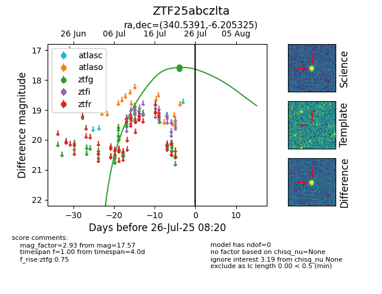

Target ZTF25abczlta at 2025-07-26 08:20, see:
FINK: fink-portal.org/ZTF25abczlta
Lasair: lasair-ztf.lsst.ac.uk/objects/ZTF25abczlta
ALeRCE: alerce.online/object/ZTF25abczlta
alt names
ZTF25abczlta (ztf,fink)
coordinates:
equatorial (ra, dec) = (340.5391,-6.20532)
galactic (l, b) = (61.2893,-52.84320)
photometry
last ztfg=17.57
5 ztfg detections
